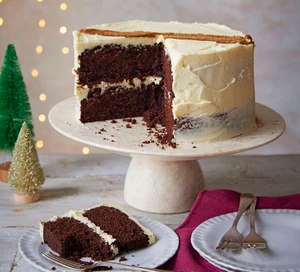

Christmas Chocolate Cake

Description:
Make a festive version of chocolate cake for an alternative Christmas dessert – the sponge and buttercream are spiced with warming ginger, cinnamon and nutmeg.
Quick preparation info:
Prep:45 mins Cook:45 mins Easy Serves 10 - 12
Ingredients:
- 200g unsalted butter
- 200g dark chocolate
- 200g light brown soft sugar
- 4 eggs
- 250g plain flour
- 50g cocoa powder
- 1 tbsp baking powder
- 1 tbsp bicarbonate of soda
- 1/2 tsp fine sea salt
- 1 tsp ground ginger
- 1 tsp ground cinnamon
- 1/2 nutmeg
- 2-3 tbsp milk
Steps:
- Heat the oven to 180C/160C fan/gas 4. Butter two 20cm round springform cake tins and line with baking parchment. Tip the butter, chocolate and sugar into a pan set over a low heat, stirring until fully melted together. Remove from the heat and leave to cool slightly, then add the eggs, one at a time, whisking well between each addition.
- For the buttercream, beat the butter with an electric whisk until very soft. Add the icing sugar, a spoonful at a time, whisking well between each addition, until you have a light, fluffy buttercream. Beat in the vanilla.
- Put one of the sponges on a cake plate or stand, and spread a thick layer of buttercream on top. Sandwich with the other sponge and repeat with more buttercream. Spread the rest of the buttercream over the sides of the cake, scraping them slightly to create a "naked" effect.
- For the decoration, combine the ginger, cinnamon and nutmeg, then tip into a small sieve. Dust over the top of the cake, or use two strips of baking parchment to make a stripe template and dust a neat stripe on the surface. Cut into slices to serve. Will keep chilled for up to three days.
Go Back